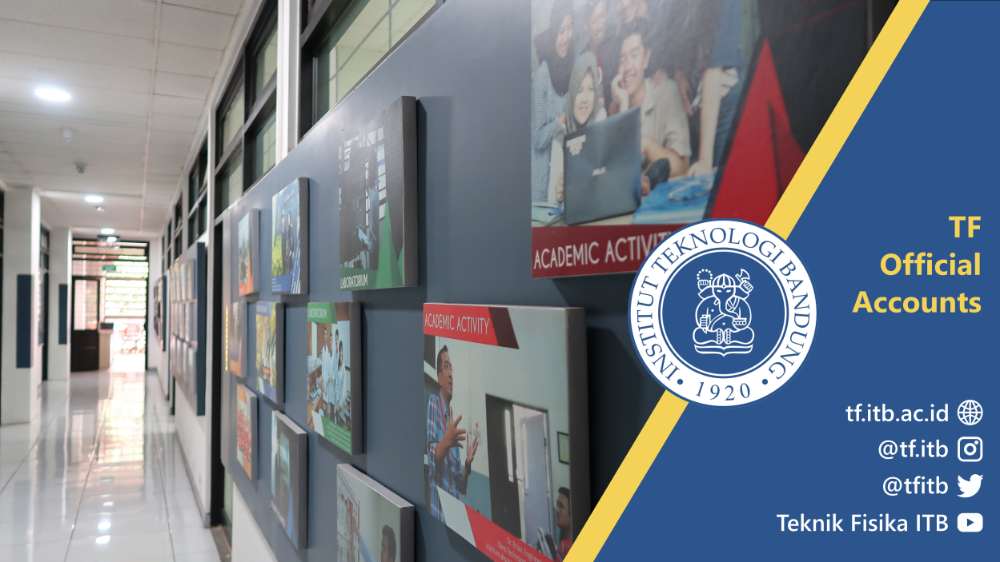
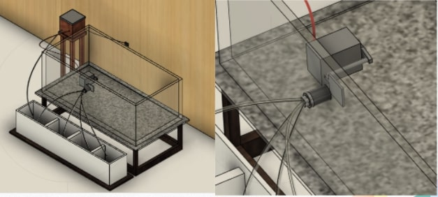
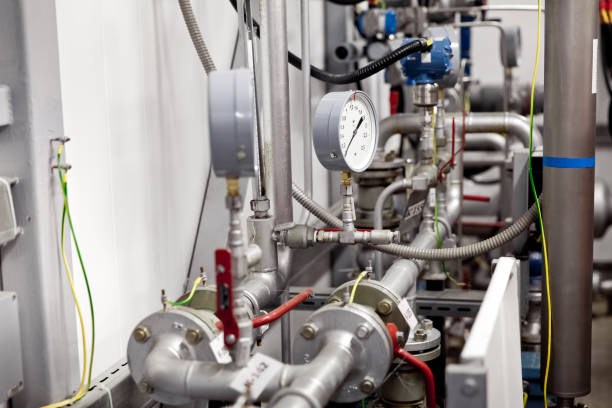
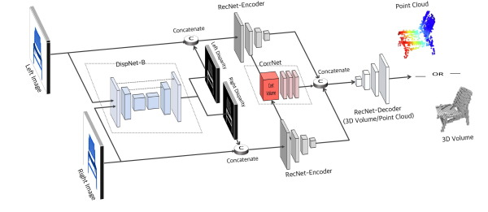

Aug 2019-Oct 2023
I am a student majoring in Engineering Physics.
In engineering physics, the focus is on the areas of expertise in instrumentation and control.
Control instrumentation is a science that learns a lot about how a system in industry can run with control either manually or automatically.


At the Physics Engineering Laboratory I,
we learned a lot about the basic principles of circuits and
basic programming using Arduino in C language.

At the Physics Engineering Laboratory II,
will make a product that contains an automatic control system
that can help or meet the needs of the community.
The product above is a control system for watering plants
using sensors and motors and a PCB to control it.

At the Physics Engineering Laboratory III,
learn about the process of transmitting signals in both analog and digital forms.
The goal is to be able to produce a sent signal
that has the correct output and can eliminate noise
in the signal data when it is transferred.

In the instrumentation and control laboratory,
the focus is on how to create a logic system to
control industrial processes.
Some examples of controls in the industry are tank filling, flow rates,
pressure levels and various other objects.

The final project is a 3D reconstruction using the multiview method
and using 2 cameras set up in stereo.
In this final project, the aim is to obtain the profile of the fabric
as the object under study, so that the structure of the fabric and
the wrinkles on the fabric will be seen.


{kind=link}
{kind=link}
{kind=link}
{kind=link}